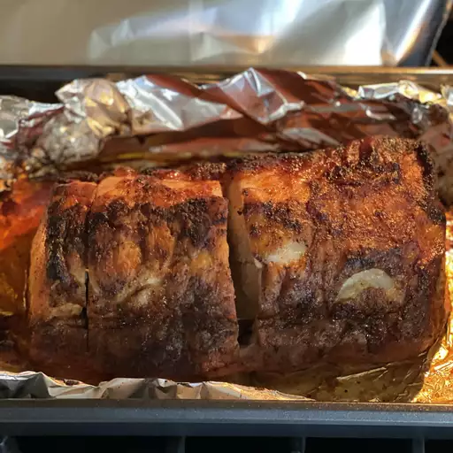

Roast Adobo Pork Loin

Give your family's everyday pork loin recipe a major flavor boost with a simple homemade adobo rub. Just combine GOYA Adobo All-Purpose Seasoning with Pepper, chili powder, cumin, brown sugar, cinnamon, and a few tablespoons of olive oil in a bowl. Rub the spice mixture over the pork, roast until golden brown, and prepare for the compliments to roll in!
Ingredients
- 1 (2 pound) boneless pork loin roast
- 2 tablespoons chili powder
- 1 tablespoon GOYA® Adobo All-Purpose Seasoning with Pepper
- 1 teaspoon ground cumin
- 1 teaspoon packed dark brown sugar
- ⅛ teaspoon ground cinnamon
- 2 tablespoons GOYA® Extra Virgin Olive Oil
- Preheat the oven to 450 degrees F (230 degrees C). Line a roasting pan with aluminum foil.
- Mix chili powder, adobo seasoning, cumin, brown sugar, and cinnamon together in a small bowl until well combined. Add olive oil and stir until completely saturated.
- Pat pork dry with paper towels. Rub pork all over with spice mixture, then place into the prepared roasting pan.
- Cook in the preheated oven until pork is dark golden brown, about 35 minutes. An instant-read thermometer inserted into the center should read at least 145 degrees F (63 degrees C).
- Transfer pork to a platter and tent with foil to keep warm. Let rest for 10 to 15 minutes before slicing.
- Serve with accumulated juices.